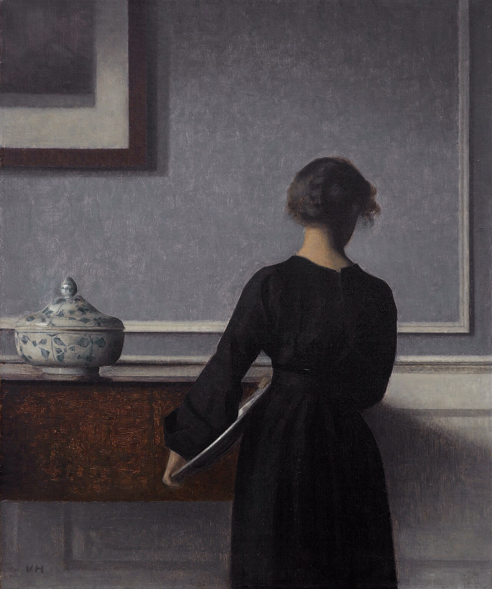

THE MUSEUM OF ME
Curated by Yang Kyungjun 기획 · 양경준
내가 해 온 일들, 믿고 있는 것들,
그리고 아직 되어가는 중인 것들의 모음.
배경음악이 흐릅니다. 원하시면 끌 수 있습니다.

전시실 안내 Gallery Guide
전시실을 하나 고르세요.
나의 한 부분을 보게 됩니다.
다섯 개의 전시실은 순서대로 보아도 되고, 마음이 가는 곳부터 들어가도 됩니다. 전시품을 누르면 그 뒤에 있는 이야기가 열립니다.
관람 안내 — 전시품을 연 뒤 ← → 키로 다음 전시품을 볼 수 있고, Esc 키로 닫을 수 있습니다.
01
전시를 마치며 Closing